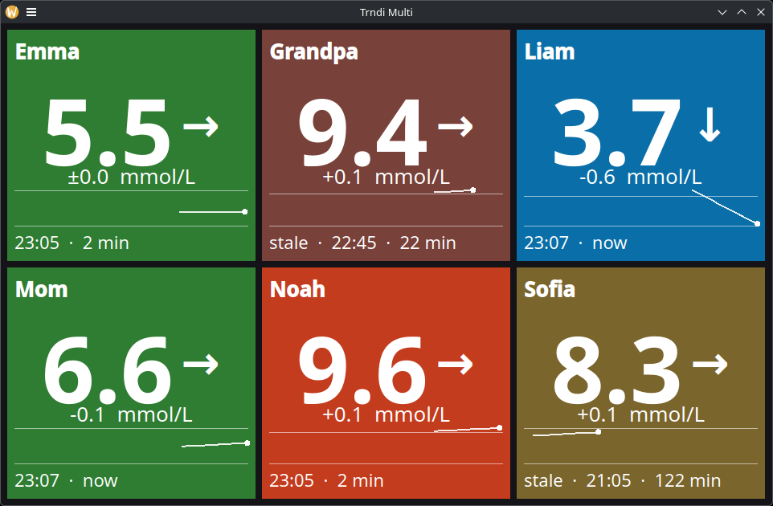

Latest build:
Loading…
Everyone's glucose,
on one screen
A companion to Trndi for parents, partners and caregivers — every account you follow as a tile on one wall display.

🌙 Nightscout
📡 Dexcom Share
💙 Tandem Source
🩸 Medtronic CareLink
🩹 FreeStyle Libre
📶 xDrip+
Linux • Raspberry Pi • Windows • macOS